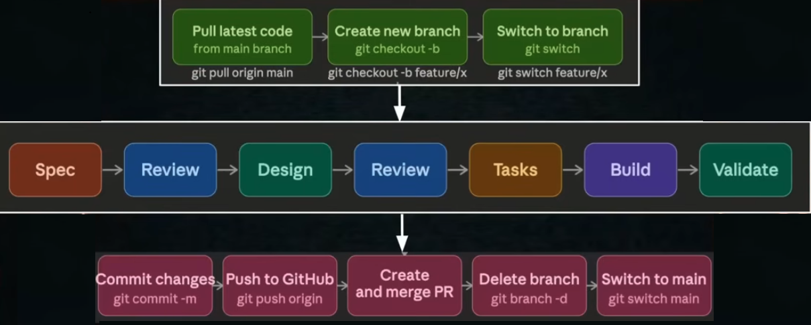

The built-in set from Video 4 — now with your own added in.
✓
Saved prompts, invoked with /command_name
Type the name, the whole instruction runs — nothing retyped, nothing forgotten.
✓
Any repeatable workflow in your project
If you do it the same way every time, it can be a command.
✓
Stored as markdown files in the .claude folder
Plain text, versioned with your code, editable by anyone on the team.
Two types
Where the file lives decides who can use it.
Project-scoped
.claude/commands/
Available only within that project
Committed to git — the whole team gets it
For workflows specific to this codebase
User-scoped
~/.claude/commands/
Available across all your projects
Personal — not shared, not committed
For habits you carry everywhere
Examples
/
/review
Runs a code review checklist on the current file.
/
/commit
Generates a git commit message based on staged changes.
/
/test
Runs the test suite and analyses any failures.
/
/security-scan
Scans the codebase for common vulnerabilities — SQL injection, exposed credentials.
Anatomy of a command file
.claude/commands/create-spec.md
---description: Create a spec file and feature branch for the next feature
argument-hint: "Feature name e.g. login and logout"
allowed-tools: Read, Write, Glob, Bash(git:*)
---
You are a senior developer spinning up a new feature.
User input: $ARGUMENTS## Step 1 — Check the working directory is clean## Step 2 — Create the feature branch## Step 3 — Research the codebase## Step 4 — Write the spec to .claude/specs/
What the command automates
The git ritual around every spec — done identically, every time.

/create-specAutomates the entire top row plus the Spec box — so the boring part is never skipped or done differently.